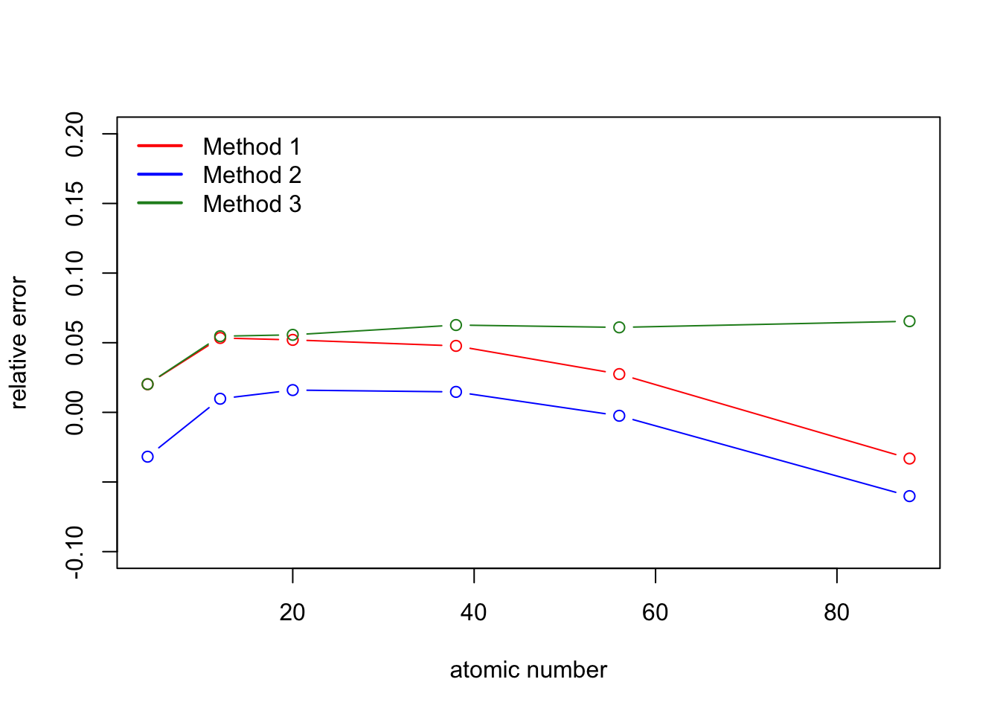
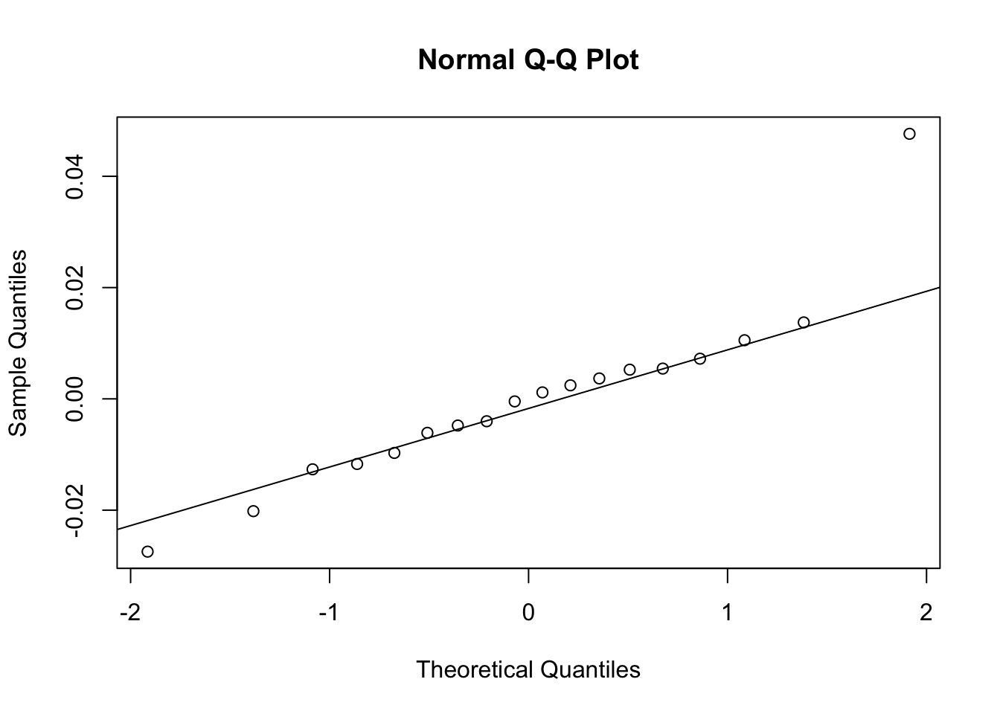
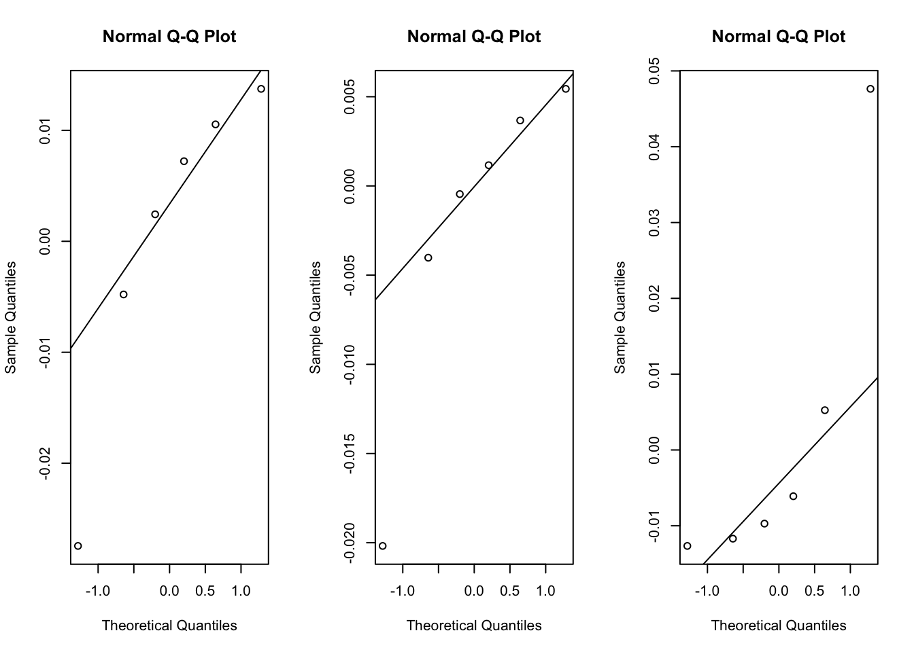

Last time Practical Statistics met to try to wrap our heads around fixed, mixed, and random effects. Chelsea Zhang gave a great chalk-talk (white board marker-talk just doesn’t have the same ring to it), and I will give a brief summary of the content before going through a real-life example.
Who Uses Fixed, Mixed, and Random Effects?
Two main groups use these terms but are referring to different models. The economists and broadly speaking, “bio folks” are the two main crowds who use these types of models. Full disclaimer: I think about these terms in the second way, so economists should feel free to comment on anything I miss, get wrong, etc.
Economists are motivated by panel data (repeated measures for individuals over time) and account for unobserved individual effects on an outcome that are fixed over time in order to better analyze the effects of time-varying variables of interest.
Bio folks are motivated by data that has structure that if left unaccounted for, would violate the uncorrelated, homoscedastic error assumption needed for traditional linear models. We may be interested in how much structure is imposed by certain variables, and for other variables, we may be uninterested in learning about the structure, we are just accounting for it to better estimate other quantities.
Okay, but what are Fixed, Mixed, and Random Effects?
First we will look at the definitions from the bio perspective.
Before we look at the formulas, let’s just jump right in with a mixed effect example, which is a situation where there are both fixed and random effects, and try to develop an intuition for what might be a fixed effect versus a random effect. If not having the equation background stresses you out, feel free to scroll past this part and come back after familiarizing yourself with the math.
Suppose we are interested in measuring the total energies (TE) for the ground-state configuration of atoms. To get an estimate for this we both need to take a physical measurement (M) and use a black box calculation (C) to arrive at an answer. How could we arrive at an estimate for each atom? We will extend to the case where multiple atoms are of interest jointly later on.
We expect a vague form:
\[TE \sim f(M,C)+ \epsilon\]
where the estimate of total energy is affected by the measurement and the calculation.
And we expect that many different experimental scenarios could occur:
- different labs take measurements
- within a lab multiple measurement equipment types could be used
- within a lab multiple of one equipment type could be used
- within a lab multiple different scientists could use the same machine
- a few “standard” black box calculation techniques are used in this field
For all of these scenarios we can use mixed effects to tackle the final estimation of the total energy of interest. We can notice natural groupings in the data, and we expect each group to have some effect on the answer. How do we decide which is a fixed and random effect? We should ask ourselves two key questions:
- Can the groups we see be considered the full population of possible groups we could see, or are they more like a random sample of a larger set of groups?
- Full Population: Fixed
- Random Sample: Random
- Do we want to estimate a coefficient for this grouping, or do we just want to account for the anticipated structure that the groups may impose on our observations?
- Y: Fixed
- N: Random
So let’s answer these questions for each of the possible scenarios for our measurement example.
- different labs take measurements
- If you are doing a key comparison where all the major labs are participating, then a fixed effect probably makes sense. An argument can be made for a random effect if you truly think you have a random set of labs doing the measurement.
- We probably don’t care about an individual lab’s effect, so we could go with a random effect.
Eek, already we have a discrepancy! Let’s persevere for now, and come back to this conflicting advice.
- within a lab multiple measurement equipment types could be used
- Do you have one of each of the main instrument types? If so, then a fixed effect probably makes sense. If you have a random subset of possible instrument types, then an argument can be made for a random effect.
- There may be cases where you care about an instrument type’s effect (you may be interested in which instrument type is better for measuring total energy) in which case fixed effects all the way. Otherwise, you probably wouldn’t have a vested interest in assessing an instrument type’s effect directly and you could go with a random effect.
- within a lab multiple of one equipment type could be used
- You have a random sample of all of that particular instruments ever produced in your lab, so use a random effect.
- You don’t care about an individual instrument’s effect, so use a random effect.
- within a lab multiple different scientists could use the same machine
- You have a random sample of all scientists, so go with a random effect.
- You don’t care about an individual scientist’s effect, so you can use a random effect.
- a few “standard” black box calculation techniques are used in this field
- There could be many different ways of calculating your quantity of interest even if there are few main techniques. Additionally, perhaps there is randomness involved in the estimation process itself. You are probably better off with a random effect.
- It is hard to think of a case where you would be explicitly interested in the effect of the calculation, so let’s go with a random effect
Now we can see that often the answer to these two questions line up, and you have a good idea of whether to use a fixed or random effect. However, we saw with the first setup that this isn’t always the case. This is part of the “art” of statistical modelling. You have to think about what you are most interested in estimating and consider what the limitations of your data are. Later on we will talk about assumptions of each effect, which can help you in your decision making process.
Great, but you still haven’t really told me what Fixed and Random Effects are?
Fixed and random effects partition the variability in a regression type approach for observations that are correlated. For example, we expect measurements done in the same lab to be correlated with one another. By allowing for fixed and random effects that are correlated, we “soak up” the correlated variability leaving the remaining variability as the necessary heteroscedastic, uncorrelated, and normal error that we expect, essentially relying on ordinary least squares techniques to finish the estimation. So let’s see how the regression models could look:
Different labs and different calculation methods
\[TE_{l,c}= \alpha_l+\beta_c+\epsilon_{l,c}\]
Different labs (multiple replicates) and different scientists
\[TE_{l,s}= \alpha_l+\beta_s+\epsilon_{l,s}\]
Different labs and different instrument types (interested in type effect)
\[TE_{l,t}= \alpha_l+\beta_t+\epsilon_{l,t}\]
Now we are studying multiple atoms (ah, another choice, fixed or random?)
\[TE_{a,l,t}= \lambda_a+\alpha_l+\beta_t+\epsilon_{l,t}\]
Maybe we think certain instruments are better at measuring certain atoms
\[TE_{a,l,c}= \lambda_a+\alpha_l+\beta_{ac}+\epsilon_{a,l,c}\]
What if all possible structures above occur?
\[TE_{a,l,c,s,t}= \lambda_a+\alpha_l+\beta_{ac}+\delta_{s}+\omega_t+\epsilon_{a,l,c,s,t}\]
Note that in all of these examples we are mainly trying to break up the value that we obtain from each experiment into parts of the measurement process that contribute variability. There are no other covariates (here we don’t have extra information about the labs, scientists, etc. ). For fixed effects we are estimating a coefficient per group. For random effects we are estimating the variance of that group.
Economists’ Perspective
Fixed Effect
\[y_{it}=X_{it}\beta +\alpha_i+\epsilon_{it}\]
- \(X\): contains covariates that are not time constant
- \(\alpha_i\): unobserved individual level effect fixed over time (fixed effect) could also incorporate a fixed effect for time \(\lambda_t\)
- \(\epsilon_{it}\): idiosyncratic error
\[y_{it}-\bar{y_i}=(X_{it}-\bar{X_i})\beta + (\alpha_i-\bar{\alpha_i})+(\epsilon_{it}-\bar{\epsilon_i})\]
Because we require \(\alpha_i\) to be constant over time, \((\alpha_i-\bar{\alpha_i})=0\) Now we have reduced our problem to an ordinary least squares problem.
Assumptions
- correct model specification
- strict exogeneity: \(E[\epsilon_{it}| X_i, \alpha_i]=0\) [In words, the idiosyncratic errors are uncorrelated with the covariates and the fixed effects.]
- no multicollinearity* [This is why we can’t have time constant covariates in X; they would be collinear with the fixed effect which is also time invariant.]
- idiosyncratic error is uncorrelated and homoscedastic [This is not really true because by detrending the errors, we have introduced some dependence, to get around this we need to use the Huber White sandwich estimator (another topic of its own) to adjust the standard errors for \(\beta\)]
*As an aside: Rebecca Barter gave some great intuition about why multicollinearity is an assumption that often comes up. In regression settings we are interested in estimating a coefficient that is interpreted as follows “if everything else is held constant, then this coefficient represents the change in the response due to a change in this predictor”. If two covariates are multicollinear (or highly correlated), then it doesn’t make sense to imagine keeping one fixed while we are changing the other.
Random Effect
\[y_{it}=X_{it}\beta +\alpha_i+\epsilon_{it}\]
Add an additional (strong) assumption that the random effects \(\alpha_i\) are uncorrelated with \(X\). Now we allow for time constant variables in \(X\), but this means that we no longer get the nice property that \(\alpha_i-\bar{\alpha_i}=0\). Therefore we need to estimate our effects via optimization which can be sensitive to starting values. In general, estimating random effects is harder than estimating fixed effects. Also, random effects are often received very skeptically in the economics literature because of the strong assumptions going into the setup.
Choosing Between Fixed and Random Effects: Connection to Shrinkage/Pooling
*See Chapter 14 of Wooldridge for more details
In the econometric framework, random effects models act as an intermediary between pooled OLS and fixed effects models. Shrinkage/pooling can be useful to leverage information across groups, especially if certain groups have smaller sample sizes. For pooled OLS we collapse the individual effect, masking any group-level variation:
\[y_{it}=X_{it}\beta +\alpha+\epsilon_{it}\]
If the unobserved effects \(a_i\) have smaller variance relative to that of the error, \(\epsilon_{it}\), then pooled OLS may be appropriate. On the other end of the spectrum, as the number of time intervals gets large and/or the variance of the \(a_i\) is larger relative to the variance of the error, the fixed effect model is appropriate.
The random effect model lies in between, so in practice, many fit the fixed effect, random effect, and pooled OLS models and compare the results to assess where on the spectrum they may be. More formally, one can fit the fixed effect and the random effect models and then apply the Hausman test. The null hypothesis is that the random effect model is appropriate. Therefore, a rejection means that the assumptions needed for the random effect model to be valid are not met. In practice, failing to reject means that the two models are fairly close, and either can be used or that there is so much variation in the fixed effect estimates that you will have low power to find practically significant differences between the groups. It should be noted that if the assumptions underpinning the random effects models are in fact reasonably met, the estimation under this model is more efficient than in the pooled OLS case.
Connection Between Two Frameworks
We can consider the economists’ point of view as a formalization of the intuition of partitioning that exists in the bio point of view, giving more formal identification rules that govern what is allowed to be a fixed and random effect given our data. For example, in the bio case, random effects are often assumed to come from a normal distribution with an unknown variance to be estimated and to be uncorrelated with the other covariates in the model. There are ways to get around this (we can imagine a case where the effects might “bleed” into one another if they were correlated), but out-of-the-box implementations have this assumption built in. These assumptions should be considered when choosing between what is a fixed effect and what is a random effect, making the model selection process more similar to that of the economist.
How do I fit a mixed effect model?
I’m going to do this in R (sorry Python users) with the package lme4. This example is from the National Institute of Standards and Technology and follows the hypothetical example above. Here we are accounting for the atom effect and the analysis method effect. However, now the response is a relative error between the estimate of the total energy and the theoretical “truth”.
require(lme4)
## Example E28 NIST Simple GUM
## data from Exhibit 42
perNum=rep(c(4,12,20,38,56,88),3)
atom=rep(c("Be","Mg","Ca","Sr","Ba","Ra"),3)
method=c(rep(1,length(atom)/3),rep(2,length(atom)/3),rep(3,length(atom)/3))
relativeError=c(0.02019569,0.05340336,0.05203850,0.04773201,0.02748393,-0.03315584,
-0.03183248,0.00976185,0.01599646,0.01470489,-0.00244948,-0.06014852,
0.02024823,0.05467029,0.05566630,0.06270221,0.06102522,0.06543755)
data=as.data.frame(cbind(perNum,atom,method,relativeError))
## atom and method are factors
data$perNum=as.numeric(as.character(data$perNum))
data$relativeError=as.numeric(as.character(data$relativeError))
plot(data[which(data$method==1),"perNum"],data[which(data$method==1),"relativeError"],ylim=c(-0.1,0.2),type="b",col="red",xlab="atomic number",ylab="relative error")
lines(data[which(data$method==2),"perNum"],data[which(data$method==2),"relativeError"],type="b",col="blue")
lines(data[which(data$method==3),"perNum"],data[which(data$method==3),"relativeError"],type="b",col="forestgreen")
legend("topleft",col=c("red","blue","forestgreen"),c("Method 1","Method 2","Method 3"),lty=1,lwd=2,bty="n")
NIST is interested in the following relationship:
\[RE_{ij}=\alpha_i+\beta_j+\epsilon_{ij}\]
where \(i\) indexes the atom and \(j\) indexes the analysis method.
They treat the effect of atom as fixed and the analysis method as random. To understand NIST’s motivations a bit better, and therefore their modeling choices, the goal is to understand for each atom, what we can expect for a relative error from a subset of reasonable analysis method implementations. They assume that the analysis method effect is drawn from a normal distribution with mean zero and some unknown variance.
Here we use the typical model structure where fixed effects are added in as you would covariates. To add a random effect \(x\) we add \((1|x)\) which says we are adding an intercept level random effect. It is possible to add a slope level effect, but we won’t go into that in this blog post.
mod=lmer(relativeError~atom+(1|method),data=data)
summary(mod)## Linear mixed model fit by REML ['lmerMod']
## Formula: relativeError ~ atom + (1 | method)
## Data: data
##
## REML criterion at convergence: -47.2
##
## Scaled residuals:
## Min 1Q Median 3Q Max
## -1.32921 -0.42664 0.01711 0.26112 2.30624
##
## Random effects:
## Groups Name Variance Std.Dev.
## method (Intercept) 0.0009100 0.03017
## Residual 0.0004266 0.02065
## Number of obs: 18, groups: method, 3
##
## Fixed effects:
## Estimate Std. Error t value
## (Intercept) 0.02869 0.02111 1.359
## atomBe -0.02582 0.01686 -1.531
## atomCa 0.01255 0.01686 0.744
## atomMg 0.01059 0.01686 0.628
## atomRa -0.03798 0.01686 -2.252
## atomSr 0.01303 0.01686 0.772
##
## Correlation of Fixed Effects:
## (Intr) atomBe atomCa atomMg atomRa
## atomBe -0.399
## atomCa -0.399 0.500
## atomMg -0.399 0.500 0.500
## atomRa -0.399 0.500 0.500 0.500
## atomSr -0.399 0.500 0.500 0.500 0.500So what have we estimated? The fixed effects for each atom are estimated. The unknown variance of the random effect for method is also estimated. Remember this makes sense with our decision making process. We care about the values of the effects for each atom so we estimate them. We only really care about accounting for the variability structure of the method choice, so we just estimate the variance.
We can see that our fixed effect estimates are centered around zero with fairly small t values suggesting that these differences aren’t statistically significant. We can also see that for the random effects, the standard deviation for the residuals (within element variability) and for the method are fairly close. NIST concludes “for the alkaline earth metals at least, the dispersion of values attributable to differences between computational approximations is comparable to the intrinsic (in)accuracy of the individual approximation methods.”
Just as an FYI, if you have a regular covariate (not a factor) of interest as well, you can just add that in as usual. This will also be considered a fixed effect.
data2=cbind(data,fake=rnorm(nrow(data),0,1))
mod2=lmer(relativeError~atom+fake+(1|method),data=data2)
summary(mod2)## Linear mixed model fit by REML ['lmerMod']
## Formula: relativeError ~ atom + fake + (1 | method)
## Data: data2
##
## REML criterion at convergence: -45.5
##
## Scaled residuals:
## Min 1Q Median 3Q Max
## -1.36938 -0.44118 -0.00285 0.44320 1.36975
##
## Random effects:
## Groups Name Variance Std.Dev.
## method (Intercept) 0.001086 0.03296
## Residual 0.000215 0.01466
## Number of obs: 18, groups: method, 3
##
## Fixed effects:
## Estimate Std. Error t value
## (Intercept) 0.028067 0.020829 1.348
## atomBe -0.008677 0.013079 -0.663
## atomCa 0.002993 0.012327 0.243
## atomMg 0.021063 0.012397 1.699
## atomRa -0.036768 0.011978 -3.070
## atomSr 0.013380 0.011972 1.118
## fake -0.012165 0.003738 -3.254
##
## Correlation of Fixed Effects:
## (Intr) atomBe atomCa atomMg atomRa atomSr
## atomBe -0.267
## atomCa -0.277 0.349
## atomMg -0.280 0.546 0.407
## atomRa -0.288 0.470 0.478 0.491
## atomSr -0.287 0.461 0.483 0.485 0.500
## fake 0.009 -0.403 0.238 -0.260 -0.031 -0.009Assumptions
\[RE_{ij}=\alpha_i+\beta_j+\epsilon_{ij}\]
Here we assume that \(\epsilon_{ij}\) are an iid sample from a Gaussian distribution with mean zero and standard deviation \(\sigma\) and interpret it as the leftover error after we have partitioned out all of the correlated error induced by grouping structures. You can check this assumption by looking at plots of the residuals such as the QQ plot.
Check for residuals with mean zero.
mean(resid(mod))## [1] -3.252607e-18Check for normality.
qqnorm(resid(mod))
qqline(resid(mod))
This doesn’t look great, but with small sample sizes, it probably isn’t unreasonable. We could try a log transformation of the relative errors if we feel compelled to make this a bit more normal.
By treating \(\beta_j\) as a random effect we are assuming that they are a random sample from a Gaussian distribution with mean 0 and a standard deviation \(\tau\) that we estimate. We can plot the QQ plots per method, but it will be hard to assess normality with so few points.
## by method
par(mfrow=c(1,3))
qqnorm(resid(mod)[1:6])
qqline(resid(mod)[1:6])
qqnorm(resid(mod)[7:12])
qqline(resid(mod)[7:12])
qqnorm(resid(mod)[13:18])
qqline(resid(mod)[13:18])
By using a random effect at the intercept level we are assuming that whatever the effect of each method is, it’s going to be the same across atoms. If we didn’t think this was the case, we could look to slope varying models. This could be its own discussion/blog topic, so I won’t go into it here. We should note that unless we have good reason to believe that the slope varies and/or we have a lot of data with sufficient replication, we should avoid fitting the more complicated slope varying model.
*Note: The Hausman test for the panel data can be found in plm::phtest.
Summary
In summary, we have seen how two schools of thought treat fixed and random effects, discussed when to use fixed effects and when to use random effects in both frameworks, discussed the assumptions behind the models, and seen how to implement a mixed effect model in R. Fixed and random effect models still remain a bit mysterious, but I hope that this discussion cleared up a few things. An important take away is that the terminology has fundamentally different interpretations depending on the field, so it is important to define how you interpret these models, especially in interdisciplinary collaborations. Feel free to offer suggestions to this blog post.
References and Resources
Thanks to Chelsea Zhang for providing the resources that she found while preparing for her talk and for her suggestions and edits while I prepared this blog post.
Econometric Point of View:
- Introductory Econometrics: A Modern Approach by Jeffrey M. Wooldridge
Biostatistics Point of View:
More Information on Multilevel Modeling Including Random Slopes Models:
- Data Analysis Using Regression and Multilevel/Hierarchical Models by Andrew Gelman and Jennifer Hill
Confirmation that this topic is confusing:
Example Data and Setup:
- Possolo, Antonio. “Simple Guide for Evaluating and Expressing the Uncertainty of NIST Measurement Results.” NIST Technical Note (1900).
Implementation of Fits:
-Linear Mixed-Effects Models Using R by Andrzej Galeck and Tomasz Burzykowski